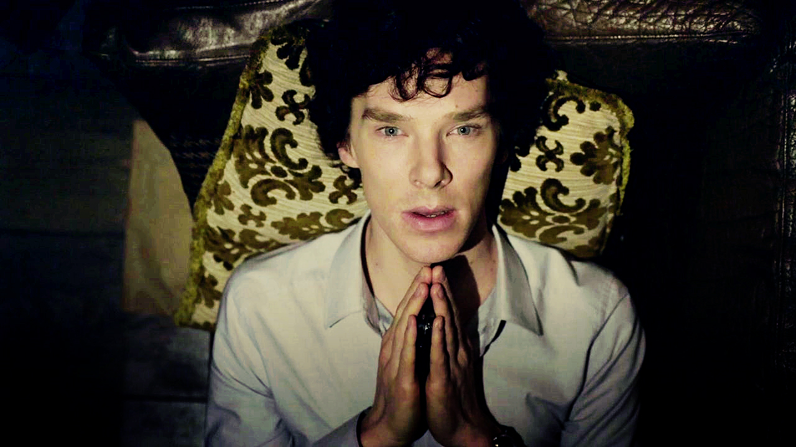

В воскресенье один из создателей сериала подтвердил в своём твиттере, что «Шерлок» будет продлён на третий сезон.
Вот, что он говорит: "Of course there’s going to be a third series – it was commissioned at the same time as the second».
Отсюда .